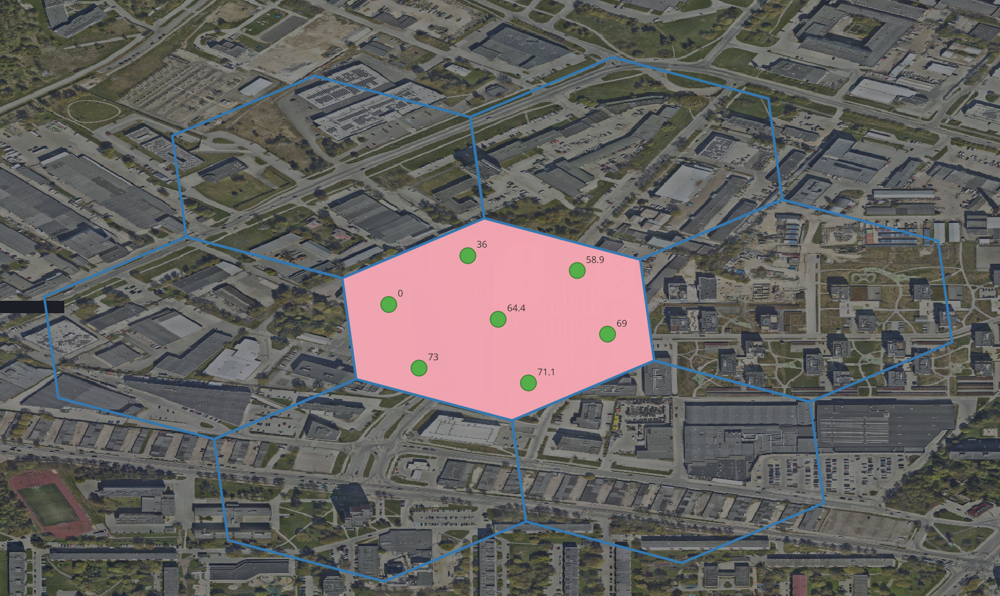

<!DOCTYPE html>
<html lang="en">
  <head>
    <meta charset="utf-8" />
    <meta name="viewport" content="width=device-width, initial-scale=1.0, maximum-scale=1.0, user-scalable=no" />

    <title>Location Intelligence (GIS) in Apraiz</title>
    <link rel="stylesheet" href="dist/reveal.css" />
    <link rel="stylesheet" href="css/omarchy-osaka-jade.css" id="theme" />
    <link rel="stylesheet" href="plugin/highlight/zenburn.css" />
	<link rel="stylesheet" href="css/layout.css" />
	<link rel="stylesheet" href="css/jetbrains-mono.css" />
	<link rel="stylesheet" href="plugin/customcontrols/style.css">
	<link rel="stylesheet" href="plugin/chalkboard/style.css">

	<link rel="stylesheet" href="plugin/reveal-pointer/pointer.css" />


    <script defer src="dist/fontawesome/all.min.js"></script>

	<script type="text/javascript">
		var forgetPop = true;
		function onPopState(event) {
			if(forgetPop){
				forgetPop = false;
			} else {
				parent.postMessage(event.target.location.href, "app://obsidian.md");
			}
        }
		window.onpopstate = onPopState;
		window.onmessage = event => {
			if(event.data == "reload"){
				window.document.location.reload();
			}
			forgetPop = true;
		}

		function fitElements(){
			const itemsToFit = document.getElementsByClassName('fitText');
			for (const item in itemsToFit) {
				if (Object.hasOwnProperty.call(itemsToFit, item)) {
					var element = itemsToFit[item];
					fitElement(element,1, 1000);
					element.classList.remove('fitText');
				}
			}
		}

		function fitElement(element, start, end){

			let size = (end + start) / 2;
			element.style.fontSize = `${size}px`;

			if(Math.abs(start - end) < 1){
				while(element.scrollHeight > element.offsetHeight){
					size--;
					element.style.fontSize = `${size}px`;
				}
				return;
			}

			if(element.scrollHeight > element.offsetHeight){
				fitElement(element, start, size);
			} else {
				fitElement(element, size, end);
			}		
		}


		document.onreadystatechange = () => {
			fitElements();
			if (document.readyState === 'complete') {
				if (window.location.href.indexOf("?export") != -1){
					parent.postMessage(event.target.location.href, "app://obsidian.md");
				}
				if (window.location.href.indexOf("print-pdf") != -1){
					let stateCheck = setInterval(() => {
						clearInterval(stateCheck);
						window.print();
					}, 250);
				}
			}
	};


        </script>
  </head>
  <body>
    <div class="reveal">
      <div class="slides"><section  data-markdown><script type="text/template"><!-- .slide: class="drop" -->
<div class="" style="position: absolute; left: 0px; top: 0px; height: 700px; width: 960px; min-height: 700px; display: flex; flex-direction: column; align-items: center; justify-content: center" absolute="true">

## Location Intelligence (GIS) in Apraiz


</div></script></section><section ><section data-markdown><script type="text/template"><!-- .slide: class="drop" -->
<div class="" style="position: absolute; left: 0px; top: 0px; height: 700px; width: 960px; min-height: 700px; display: flex; flex-direction: column; align-items: center; justify-content: center" absolute="true">

# GIS

- Read API for cached OpenStreetMap amenities (7 countries, 35 cities)
	- schools, parking, shops, bike stations, etc
- &shy;<!-- .element: class="fragment" data-fragment-index="1" -->walking score inspired by [Redfin](https://www.redfin.com/how-walk-score-works)
- &shy;<!-- .element: class="fragment" data-fragment-index="2" -->external environment APIs and basemaps
	- world and local basemaps
	- noise map, urban heat islands, flooding, etc
- &shy;<!-- .element: class="fragment" data-fragment-index="3" -->sunscore map from [ShadowMap](https://shadowmap.org/)
</div></script></section><section data-markdown><script type="text/template"><!-- .slide: class="drop" -->
<div class="" style="position: absolute; left: 0px; top: 0px; height: 700px; width: 960px; min-height: 700px; display: flex; flex-direction: column; align-items: center; justify-content: center" absolute="true">

# Tech stack

- internal FE w/ React and [MapLibre](https://maplibre.org/)
- &shy;<!-- .element: class="fragment" data-fragment-index="1" -->API using Bun and Hono
	- [Scalar](https://scalar.com/) docs
- &shy;<!-- .element: class="fragment" data-fragment-index="2" -->PostGIS DB w/ Drizzle
	- `ST_AsGeoJSON` && `ST_AsMVT`
- &shy;<!-- .element: class="fragment" data-fragment-index="3" -->loaders, walking score using Python ETL scripts w/ GIS libraries
	- [OpenRouteService](https://openrouteservice.org/) POC drive times for walking, bike, car 💰
	- *[Google Places API scraper](https://github.com/gosom/google-maps-scraper)* for ratings
- &shy;<!-- .element: class="fragment" data-fragment-index="4" -->internal docs, research, implementation details, TODOs in [Zensical](https://zensical.org/)
</div></script></section></section><section ><section data-markdown><script type="text/template"><!-- .slide: class="drop" -->
<div class="" style="position: absolute; left: 0px; top: 0px; height: 700px; width: 960px; min-height: 700px; display: flex; flex-direction: column; align-items: center; justify-content: center" absolute="true">

# API

- filters for `city`, `bbox`, `category`, `radius`, `knn`, `sort`, etc.


</div></script></section><section data-markdown><script type="text/template"><!-- .slide: class="drop" -->
<div class="" style="position: absolute; left: 0px; top: 0px; height: 700px; width: 960px; min-height: 700px; display: flex; flex-direction: column; align-items: center; justify-content: center" absolute="true">

# tier filter


</div></script></section><section data-markdown><script type="text/template"><!-- .slide: class="drop" -->
<div class="" style="position: absolute; left: 0px; top: 0px; height: 700px; width: 960px; min-height: 700px; display: flex; flex-direction: column; align-items: center; justify-content: center" absolute="true">


</div></script></section></section><section ><section data-markdown><script type="text/template"><!-- .slide: class="drop" -->
<div class="" style="position: absolute; left: 0px; top: 0px; height: 700px; width: 960px; min-height: 700px; display: flex; flex-direction: column; align-items: center; justify-content: center" absolute="true">

# Walking score

TL;DR `score_point(lat, lon) -> ScoreResult`


</div></script></section><section data-markdown><script type="text/template"><!-- .slide: class="drop" -->
<div class="" style="position: absolute; left: 0px; top: 0px; height: 700px; width: 960px; min-height: 700px; display: flex; flex-direction: column; align-items: center; justify-content: center" absolute="true">

- H3 grid choropleth map as the output
	- median score based on the sample points
	- property score based on the grid it is in
- &shy;<!-- .element: class="fragment" data-fragment-index="1" -->scored 0️⃣ to 💯, then classified into bands
- &shy;<!-- .element: class="fragment" data-fragment-index="2" -->European calibrated, Dijkstra's network walk graph, max 2500 m cutoff
	- we do not have real travel times ☹
- &shy;<!-- .element: class="fragment" data-fragment-index="3" -->Different weight, decay functions for each category/amenities w/ safety nets, variety vs sufficiency
- &shy;<!-- .element: class="fragment" data-fragment-index="4" -->Using terrain where possible
- &shy;<!-- .element: class="fragment" data-fragment-index="5" -->Took  ~8 hours for all cities
</div></script></section><section data-markdown><script type="text/template"><!-- .slide: class="drop" -->
<div class="" style="position: absolute; left: 0px; top: 0px; height: 700px; width: 960px; min-height: 700px; display: flex; flex-direction: column; align-items: center; justify-content: center" absolute="true">

### network graph for sample point

<video data-autoplay autoplay muted loop playsinline style="width: 100%; max-height: 640px;"><source src="_Assets/screenrecording-2026-10-01_13-06-46.mp4" type="video/mp4"></video>
</div></script></section><section data-markdown><script type="text/template"><!-- .slide: class="drop" -->
<div class="" style="position: absolute; left: 0px; top: 0px; height: 700px; width: 960px; min-height: 700px; display: flex; flex-direction: column; align-items: center; justify-content: center" absolute="true">

### why terrain matters


</div></script></section><section data-markdown><script type="text/template"><!-- .slide: class="drop" -->
<div class="" style="position: absolute; left: 0px; top: 0px; height: 700px; width: 960px; min-height: 700px; display: flex; flex-direction: column; align-items: center; justify-content: center" absolute="true">


</div></script></section><section data-markdown><script type="text/template"><!-- .slide: class="drop" -->
<div class="" style="position: absolute; left: 0px; top: 0px; height: 700px; width: 960px; min-height: 700px; display: flex; flex-direction: column; align-items: center; justify-content: center" absolute="true">

network-distance catchment (OSM walk graph) → *optional terrain-adjusted effort distance* → logistic distance decay → 13 weighted categories (sufficiency / variety, with special rules for transit and parks) → × connectivity multiplier (0.85–1.0) → 0–100 score + band

>  nearby things count fully, credit fades smoothly with distance, hills count as extra distance, and piling up more of the same thing stops helping fairly quickly
</div></script></section><section data-markdown><script type="text/template"><!-- .slide: class="drop" -->
<div class="" style="position: absolute; left: 0px; top: 0px; height: 700px; width: 960px; min-height: 700px; display: flex; flex-direction: column; align-items: center; justify-content: center" absolute="true">

| Band                  | Score  |       Tiles | Share |
| --------------------- | ------ | ----------: | ----: |
| Walker's paradise     | 90–100 |         198 |  0.1% |
| Very walkable         | 70–89  |       5,213 |  2.3% |
| Walkable              | 50–69  |       8,676 |  3.8% |
| Transit or car needed | 25–49  |      14,538 |  6.4% |
| Car-dependent         | 0–24   |     199,569 | 87.5% |
| **Total**             |        | **228,194** |       |
</div></script></section><section data-markdown><script type="text/template"><!-- .slide: class="drop" -->
<div class="" style="position: absolute; left: 0px; top: 0px; height: 700px; width: 960px; min-height: 700px; display: flex; flex-direction: column; align-items: center; justify-content: center" absolute="true">


</div></script></section></section><section ><section data-markdown><script type="text/template"><!-- .slide: class="drop" -->
<div class="" style="position: absolute; left: 0px; top: 0px; height: 700px; width: 960px; min-height: 700px; display: flex; flex-direction: column; align-items: center; justify-content: center" absolute="true">

# Other map layers
</div></script></section><section data-markdown><script type="text/template"><!-- .slide: class="drop" -->
<div class="" style="position: absolute; left: 0px; top: 0px; height: 700px; width: 960px; min-height: 700px; display: flex; flex-direction: column; align-items: center; justify-content: center" absolute="true">

### basemaps

<split even gap="2">


</split>
</div></script></section><section data-markdown><script type="text/template"><!-- .slide: class="drop" -->
<div class="" style="position: absolute; left: 0px; top: 0px; height: 700px; width: 960px; min-height: 700px; display: flex; flex-direction: column; align-items: center; justify-content: center" absolute="true">

## Noise map


</div></script></section><section data-markdown><script type="text/template"><!-- .slide: class="drop" -->
<div class="" style="position: absolute; left: 0px; top: 0px; height: 700px; width: 960px; min-height: 700px; display: flex; flex-direction: column; align-items: center; justify-content: center" absolute="true">

### sunscore map dynamic grid


</div></script></section></section><section ><section data-markdown><script type="text/template"><!-- .slide: class="drop" -->
<div class="" style="position: absolute; left: 0px; top: 0px; height: 700px; width: 960px; min-height: 700px; display: flex; flex-direction: column; align-items: center; justify-content: center" absolute="true">

# DB

- Storing OSM (removing unnecessary parts) data
- &shy;<!-- .element: class="fragment" data-fragment-index="1" -->precomputed H3 tiles for walking score and shadow map
- &shy;<!-- .element: class="fragment" data-fragment-index="2" -->*precomputed routing* w/ [Valhalla](https://github.com/valhalla/valhalla) or OpenRouteService
- &shy;<!-- .element: class="fragment" data-fragment-index="3" -->417 MB on disk; 56 MB compressed
</div></script></section><section data-markdown><script type="text/template"><!-- .slide: class="compact-table drop" -->
<div class="" style="position: absolute; left: 0px; top: 0px; height: 700px; width: 960px; min-height: 700px; display: flex; flex-direction: column; align-items: center; justify-content: center" absolute="true">

<style> .reveal section.compact-table table { font-size: 0.6em; margin: 0 auto; } .reveal section.compact-table table th, .reveal section.compact-table table td { padding: 0.3em 0.6em; } </style>


### amenity tables

| Category       | Table                  |       Count | Share |
| -------------- | ---------------------- | ----------: | ----: |
| parking        | `parking`              |      84,692 | 40.1% |
| transport      | `amenities`            |      64,950 | 30.8% |
| parks          | `amenities`            |      39,037 | 18.5% |
| education      | `amenities`            |       9,276 |  4.4% |
| food_shopping  | `amenities`            |       8,598 |  4.1% |
| EV charging    | `ev_charging_stations` |       2,985 |  1.4% |
| bicycle rental | `bicycle_rentals`      |       1,538 |  0.7% |
| **Total**      |                        | **211,076** |       |
</div></script></section><section data-markdown><script type="text/template"><!-- .slide: class="compact-table drop" -->
<div class="" style="position: absolute; left: 0px; top: 0px; height: 700px; width: 960px; min-height: 700px; display: flex; flex-direction: column; align-items: center; justify-content: center" absolute="true">

### walking score

| Capital    | Tiles | Terrain |   Districts | Subdistricts |
| ---------- | ----: | ------- | ----------: | -----------: |
| Stockholm  | 2,700 | ✅       |          11 |           47 |
| Copenhagen | 1,096 | —       | 10 (bydele) |           67 |
| Oslo       | 6,346 | ✅       |          17 |            — |
| Helsinki   | 8,759 | ✅       |           8 |           59 |
| Tallinn    | 1,950 | —       |           8 |           83 |
| Riga       | 3,540 | —       |           7 |           58 |
| Vilnius    | 4,341 | —       |          21 |            — |
</div></script></section></section><section  data-markdown><script type="text/template"><!-- .slide: class="drop" -->
<div class="" style="position: absolute; left: 0px; top: 0px; height: 700px; width: 960px; min-height: 700px; display: flex; flex-direction: column; align-items: center; justify-content: center" absolute="true">

# Open questions

- city boundaries (OSM or local)
- &shy;<!-- .element: class="fragment" data-fragment-index="1" -->cost of premium APIs 
	- routing, shadowmap, places insights
- &shy;<!-- .element: class="fragment" data-fragment-index="2" -->Standardizing the external APIs
- &shy;<!-- .element: class="fragment" data-fragment-index="3" -->Precomputing routing with may not feasible on my local machine
- &shy;<!-- .element: class="fragment" data-fragment-index="4" -->Updating the data
</div></script></section><section  data-markdown><script type="text/template"><!-- .slide: class="drop" -->
<div class="" style="position: absolute; left: 0px; top: 0px; height: 700px; width: 960px; min-height: 700px; display: flex; flex-direction: column; align-items: center; justify-content: center" absolute="true">

- [Internal FE](http://localhost:13173/)
- [Scalar API docs](http://localhost:13001/api/docs#tag/location-intelligence/GET/api/properties/{slug}/amenities)
</div></script></section></div>
    </div>

    <script src="dist/reveal.js"></script>

    <script src="plugin/markdown/markdown.js"></script>
    <script src="plugin/highlight/highlight.js"></script>
    <script src="plugin/zoom/zoom.js"></script>
    <script src="plugin/notes/notes.js"></script>
    <script src="plugin/math/math.js"></script>
	<script src="plugin/mermaid/mermaid.js"></script>
	<script src="plugin/chart/chart.min.js"></script>
	<script src="plugin/chart/plugin.js"></script>
	<script src="plugin/menu/menu.js"></script>
	<script src="plugin/customcontrols/plugin.js"></script>
	<script src="plugin/chalkboard/plugin.js"></script>
	<script src="plugin/reveal-pointer/pointer.js"></script>

    <script>
      function extend() {
        var target = {};
        for (var i = 0; i < arguments.length; i++) {
          var source = arguments[i];
          for (var key in source) {
            if (source.hasOwnProperty(key)) {
              target[key] = source[key];
            }
          }
        }
        return target;
      }

	  function isLight(color) {
		let hex = color.replace('#', '');

		// convert #fff => #ffffff
		if(hex.length == 3){
			hex = `${hex[0]}${hex[0]}${hex[1]}${hex[1]}${hex[2]}${hex[2]}`;
		}

		const c_r = parseInt(hex.substr(0, 2), 16);
		const c_g = parseInt(hex.substr(2, 2), 16);
		const c_b = parseInt(hex.substr(4, 2), 16);
		const brightness = ((c_r * 299) + (c_g * 587) + (c_b * 114)) / 1000;
		return brightness > 155;
	}

	var bgColor = getComputedStyle(document.documentElement).getPropertyValue('--r-background-color').trim();
	var isLight = isLight(bgColor);

	if(isLight){
		document.body.classList.add('has-light-background');
	} else {
		document.body.classList.add('has-dark-background');
	}

      // default options to init reveal.js
      var defaultOptions = {
        controls: true,
        progress: true,
        history: true,
        center: true,
        transition: 'default', // none/fade/slide/convex/concave/zoom
        plugins: [
          RevealMarkdown,
          RevealHighlight,
          RevealZoom,
          RevealNotes,
          RevealMath.MathJax3,
		  RevealMermaid,
		  RevealChart,
		  RevealCustomControls,
		  RevealMenu,
	      RevealPointer,
		  RevealChalkboard, 
        ],


    	allottedTime: 120 * 1000,

		mathjax3: {
			mathjax: 'plugin/math/mathjax/tex-mml-chtml.js',
		},
		markdown: {
		  gfm: true,
		  mangle: true,
		  pedantic: false,
		  smartLists: false,
		  smartypants: false,
		},

		mermaid: {
			theme: isLight ? 'default' : 'dark',
		},

		customcontrols: {
			controls: [
				{id: 'toggle-overview',
				title: 'Toggle overview (O)',
				icon: '<i class="fa fa-th"></i>',
				action: 'Reveal.toggleOverview();'
				},
				{ icon: '<i class="fa fa-pen-square"></i>',
				title: 'Toggle chalkboard (B)',
				action: 'RevealChalkboard.toggleChalkboard();'
				},
				{ icon: '<i class="fa fa-pen"></i>',
				title: 'Toggle notes canvas (C)',
				action: 'RevealChalkboard.toggleNotesCanvas();'
				},
			]
		},
		menu: {
			loadIcons: false
		}
      };

      // options from URL query string
      var queryOptions = Reveal().getQueryHash() || {};

      var options = extend(defaultOptions, {"width":960,"height":700,"margin":0.04,"controls":true,"progress":true,"slideNumber":true,"transition":"slide","transitionSpeed":"default"}, queryOptions);
    </script>

    <script>
      Reveal.initialize(options);
    </script>
  </body>

  <!-- created with Advanced Slides -->
</html>
